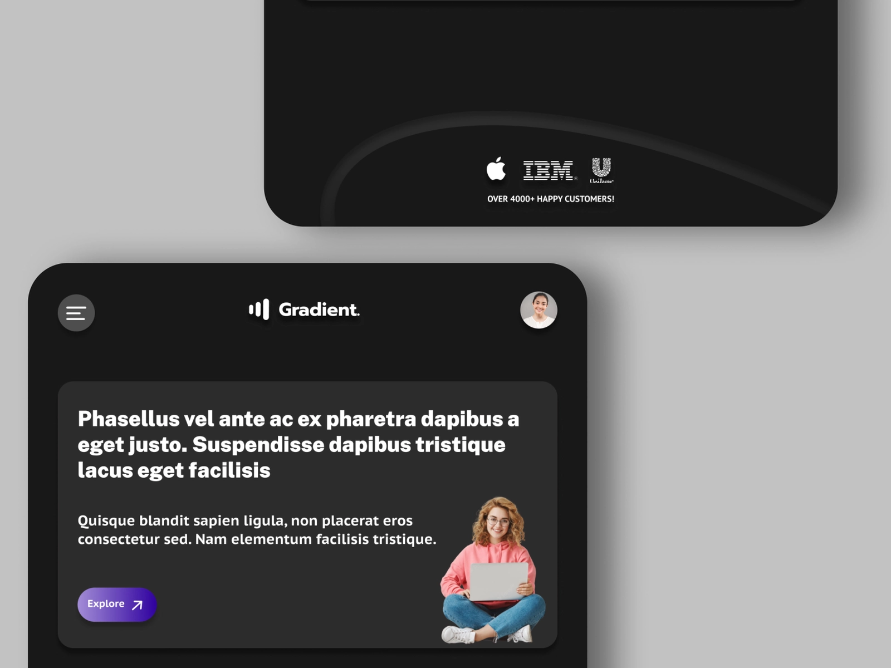
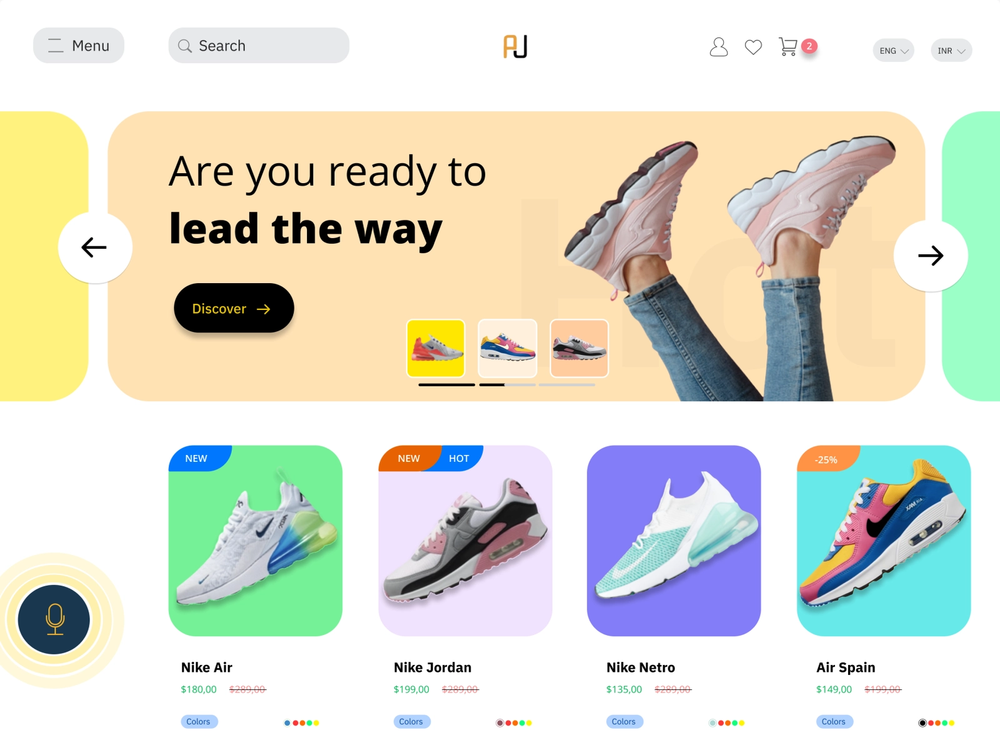
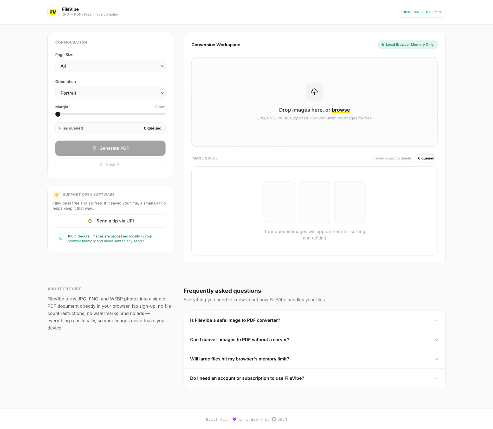
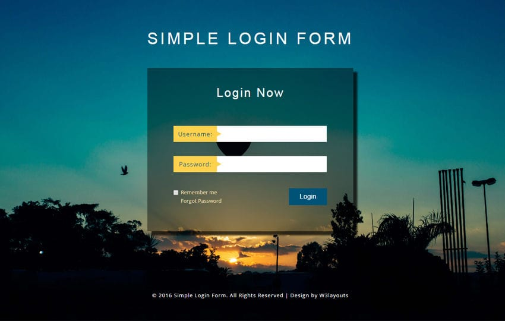

Frontend developer • UI/UX designer • creative systems thinker
I design clean, high-impact digital experiences.
I’m N. Shivam Thakur, a frontend developer and creative designer from Guwahati, Assam. I work on landing pages, product interfaces, visual systems, and creative web experiences that blend clarity, motion, and strong storytelling.
Design systems thinking, visual direction, and frontend execution shaped into one personal web experience.
Landing Pages
UI/UX Design
Frontend Development
Creative Direction
Content Writing
What I do
A personal studio approach, not a generic portfolio template.
The strongest digital work is not just attractive. It should guide attention, communicate quickly, and leave a clear memory. That’s the lens I bring to product UI, brand-led landing pages, and frontend builds.
UI / Visual Design
I create interfaces that are easy to scan, visually coherent, and designed to hold attention without becoming noisy.
UX Design
I think through navigation, hierarchy, usability, and flow so the experience feels intuitive instead of merely decorative.
Frontend Development
I build responsive websites and interactions that stay faithful to the visual direction while feeling fast and intentional.
Database Awareness
I understand the structure behind products, which helps me design and build interfaces that map cleanly to real systems.
Brand and Creative Design
I enjoy shaping visual direction, from typography and layout tone to the small details that make a page feel authored.
Content Writing
I can support web copy and content structure so a page performs better for both humans and search engines.
Selected work
Interfaces, concepts, and builds that show how I think.
These projects cover visual design, landing page thinking, and frontend execution. Each one is chosen to show range, not just fill a gallery.

UI Design
Landing Page Concept
A landing page exploration focused on hierarchy, spacing, readable call-to-action framing, and responsive presentation across screens.
Open project
UI Design
Shoe Retail Site
An e-commerce direction built around product clarity, visual energy, and conversion-friendly layout choices.
Open project
Frontend
Qestly
A frontend-focused build that reflects my interest in translating interface ideas into working browser experiences.
View repository
Backend
Login Page
A smaller project that shows my interest in functional UI, account flows, and product-oriented screen structure.
Visit GitHubMy story
From learning design tools to shaping better digital experiences.
I started my UI/UX design journey with Figma in November 2022, and that pushed me toward a broader way of thinking about products: not just how they look, but how they explain themselves. Alongside design, I’ve worked on content and frontend development, which gives me a more complete view of how digital work performs in the real world.
That mix matters. Strong websites are rarely the result of visuals alone. They need structure, content, consistency, and the ability to turn ideas into working screens.
UI/UX Designer
I started my product design journey with Figma and began developing a stronger eye for visual systems, hierarchy, and interaction design.
Content Writer
I have worked as a core team member of the content team in my university’s IoT Club, building communication skills that also strengthen web content strategy.
Frontend Developer
I’ve built projects using HTML, CSS, and JavaScript, and I keep developing my ability to move from concept to implementation.
Tools and strengths
A skill stack that supports design, build, and communication.
HTML
90%CSS
75%JavaScript
10%Figma
90%Postgres
10%MySQL
20%Search-friendly detail
Questions someone might search before hiring or contacting me.
This section is here on purpose: it helps explain what I do clearly for visitors, collaborators, and search engines.
Who is N. Shivam Thakur?
N. Shivam Thakur is a frontend developer and UI/UX designer based in Guwahati, Assam, India, focused on landing pages, product interfaces, creative web layouts, and visually strong digital experiences.
What kind of projects do I work on?
I work on UI design, UX-focused web experiences, frontend development, visual direction, creative design, and content-supported portfolio or product websites.
Do I use Figma in my workflow?
Yes. Figma is central to how I explore layout, hierarchy, components, and presentation before or alongside frontend implementation.
Why is this portfolio designed like a product landing page?
Because I want the site to stand out in search results and direct visits, not just function like a resume gallery. It is structured to communicate identity, capability, and style quickly.
How can someone contact me?
You can contact me through email, Twitter/X, or Instagram using the links below, or download my resume directly from this site.
Let’s build something sharp
Have a project, collaboration, or idea worth shaping?
I’m interested in design-forward websites, interface work, landing pages, and projects where visual craft and clarity both matter.